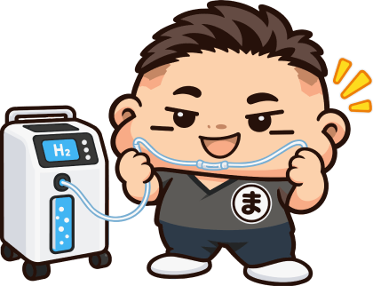
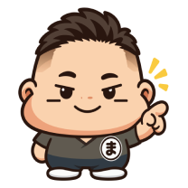
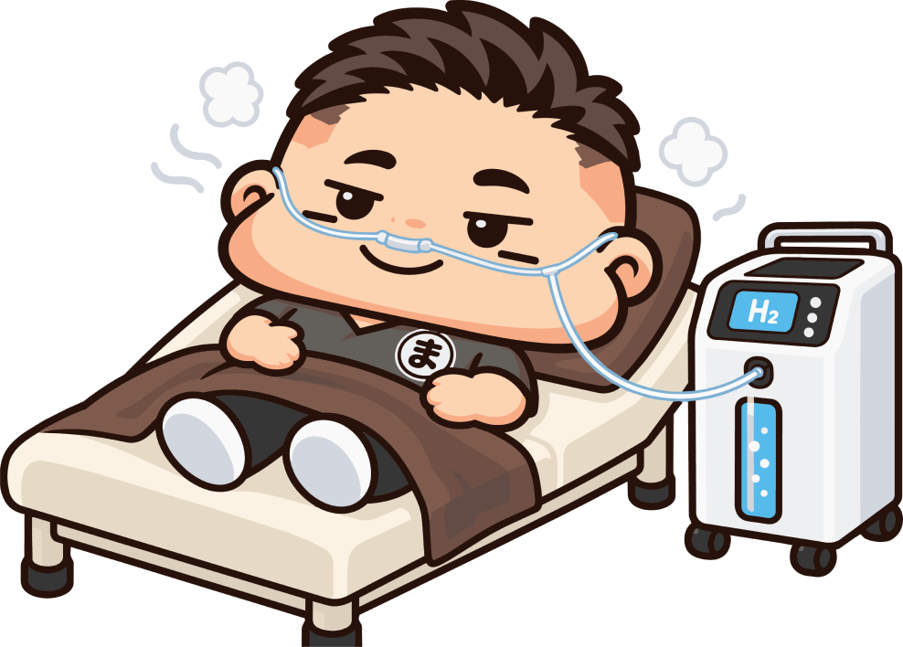
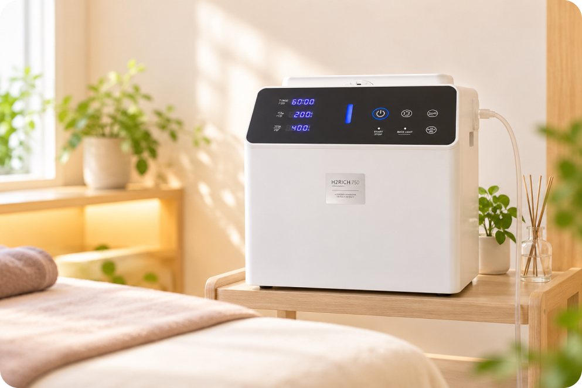
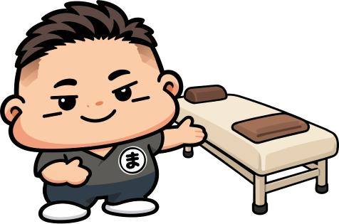
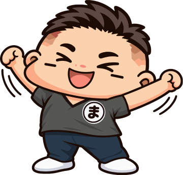
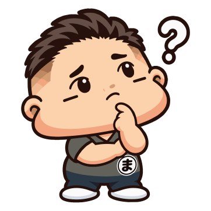

Web予約
24時間いつでもご予約いただけます。初めての方もこちらから。
Webで予約（新しいタブで開きます） HYDROGEN
HYDROGEN

横になって吸うだけ。手軽に取り入れられる水素吸入
対応メニュー：30分／60分／90分からお選びいただけます。整体などとの組み合わせも可能です。

はじめての方も、施術の合間のひと息にも。
 ABOUT
ABOUT
H2 RICH 750プラスを使用した水素吸入
水素吸入は、専用のカニューラを鼻に装着し、ゆったりとくつろぎながら水素を吸入するリラクゼーションメニューです。
横になったまま、すーっと吸うだけなので身体への負担が少なく、初めての方でも気軽に取り入れていただけます。
施術ベッドでリラックスしながら、日々の忙しさを忘れて、自分の身体と向き合うひとときを。
初めての方にも安心してご利用いただけるよう、スタッフが丁寧にご案内いたします。

 EQUIPMENT
EQUIPMENT
専用の水素吸入器を使用しています。横になった状態で、無理なくご利用いただけます。

 PRICE
PRICE
表示価格はすべて税込です。
初めての方は、専用のカニューラを別途ご購入いただきます（700円税込・使用回数10回）。院内で清潔に個別管理させていただきます。
水素吸入 30分
2,200円税込水素吸入 60分
4,400円税込水素吸入 90分
6,600円税込 FLOW
FLOW
ご予約いただいた時間に合わせて、無理のないペースでご案内します。
STEP 01

ご来院いただき、受付にてお名前とご希望のメニューをお伝えください。
STEP 02

初めての方は専用カニューラをご購入いただきます。吸入用のベッドへご案内し、横になった状態で楽な姿勢を整えます。
STEP 03
カニューラを装着し、お選びいただいた時間（30分／60分／90分）ゆったり吸入します。
STEP 04

終了後はゆっくり起き上がっていただきます。
 FAQ
FAQ
リラックスやコンディションづくりを目的として取り入れられているケアです。体感には個人差があり、効果を保証するものではありません。
30分・60分・90分からお選びいただけます。整体と組み合わせる場合は、予約状況により整体の前後どちらかになります。
30分2,200円／60分4,400円／90分6,600円（税込）です。カニューラは別途ご購入いただきます（700円税込・使用回数10回）。
決まった回数や頻度は設けていません。毎日のリラックスタイムとしても、気になったときのひと息にもご利用いただけます。


 RESERVE
RESERVE
ご予約はWeb予約が便利です。お急ぎの方はお電話、ご相談はLINEからも承っております。
24時間いつでもご予約いただけます。初めての方もこちらから。
Webで予約（新しいタブで開きます）気になることを気軽に
ご相談いただけます。
お急ぎのご相談は
お電話が便利です。
当院への営業・勧誘を目的としたお電話はご遠慮ください。